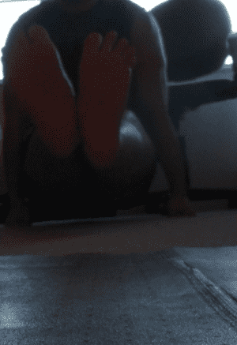
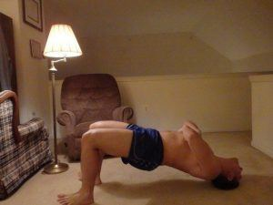

< < < Back
You Can’t Reach Advanced Fitness Goals Without A Timer – Return Of Kings
“A timer?” You might find yourself asking. Yes, the humble stopwatch or timer is one of the most underrated tools you can use in your physical training. “Why?” you might ask yourself. There’s really two reasons.
The first is that timing yourself gives you a concrete goal to work for, and studies have shown that when there is a quantitative, measurable goal that is targeted (not just in fitness, but in anything that can be quantified, be it business or studies or hobbies), it is easier to reach that target.
The second is, admittedly, pretty related to the first one: Namely that, as I have discussed before, willpower is a virtual “muscle” that can be trained just as the actual skeletal muscles can be trained. Therefore, doing timed exercises and increasing the time for each exercise can train the willpower in addition to training whatever muscles are being trained during said exercise.
“Well, that sounds pretty good, Larsen!” you might say to yourself, “how do I use the timer in regards to exercise?”
You can use it either as a stop watch to adjudicate your speed—ie: running the time down to 0—or you can use it to measure a maximal amount of time, to see how long you can do a certain exercise.
Having used timers for both goals, I can say that it doesn’t exactly take a genius to figure out one exercise you use a stop watch for–running, both in terms of sprinting and distance running. However, there’s really not much instruction you can give for running—at least, not as much as there is for resistance training, so I doubt you need me to tell you to put one foot in front of the other.
Instead, I will give you three resistance exercises that are typically done as static holds, that can be timed for purposes of training both muscular endurance and mental endurance (and another term for the latter is, of course, willpower).
The Horse Stance
One of the fundamentals of kung fu practice, the horse stance is also used as a judge of hip flexibility and, in certain occasions, as a method of corporal punishment in Asian countries for one simple reason—it’s painful!
Keeping the back straight and the arms fully extended in front of the chest, bend the legs down so that the knees and hips are equal, and the thighs are parallel. The key is to keep the chest high and the arms straight out, bending at the waist takes some of the pressure off the legs and can be used to cheat.
Weighted rings, tea cups, and a bamboo spike under your ass are not required
The L-Sit
An old reliable abdominal exercise, this technique will hit all of the muscles of the abdomen, the hip flexors, and the shoulders and forearms as stabilizers. As a static hold, it too can be held for time, and doing so for a minute is one of the minimum requirements for entry onto the United States men’s Olympic gymnastics team. Once a minute has been held, you can continue holding the L-Sit for even longer times, or contract the hip flexors even further and attempt a V-Sit

The Split
As I detailed in this article, the split is an exercise that almost demands long static holds to increase flexibility. So in essence you’ll be training your willpower without even meaning to do so, just by the nature of increasing your flexibility
Overhead Press Hold
The only weighted exercise in this article, the overhead press can be held for extended periods of time to strengthen the endurance of the shoulders. You can combine this with a farmer’s walk to strengthen the core as well. Be careful that you don’t do this with the same weight that your maximum overhead press is done with, as that might risk injury.
Neck bridge
You all know my love of bridging, and the neck bridge is no exception. Doing so is a very uncomfortable position, which makes it optimal for training your willpower. In addition, strengthening the neck makes you less susceptible to blows to the head, as illustrated by how many boxers and martial artists do neck bridging to strengthen their “chins”.

All of these exercises can be done with a timer, and these elements can be combined to improve your overall fitness.
Read Next: How To Increase Your Willpower